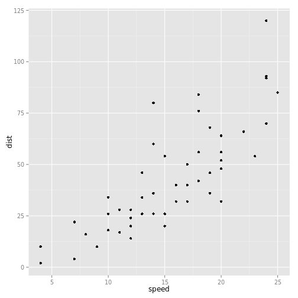

Welcome
Note - this is an attempt to get Hadley's system for using jekyll, knitr, and pandoc working together. I am using his words only until I can put in some of my own.
This is the in-progress book site for "Advanced R development". The book is designed primarily for R users who want to improve their programming skills and understanding of the language. It should also be useful for programmers coming to R from other languages, as it explains some of R's quirks and shows how some parts that seem horrible do have a positive side.
It will eventually be published as real books in Chapman and Hall's R series. The final version of the book is due in December 2013, so it should be available in early 2014. Thanks to the publisher, the wiki will continue to be freely available after the book is published. Also, I'm told \(E = mc^2\).
Advanced R programming
Learn all about how the R language works and how you can use it to solve real problems. The book is broken down into the following chapters (which you can also access from the drop-down menus at the top-right):
require(ggplot2)
#> Loading required package: ggplot2
qplot(x=speed, y=dist, data=cars)
\[ F = ma \]